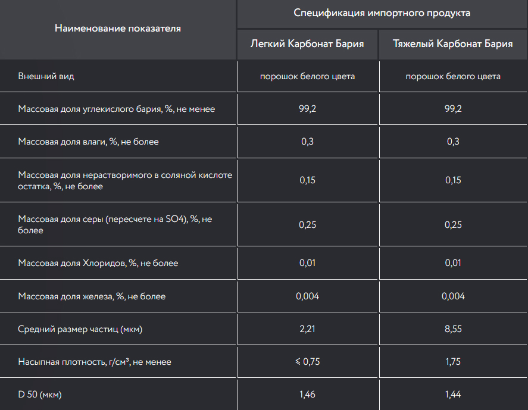

Барий углекислый

Барий углекислый (карбонат бария BaCO3) – это неорганическое соединение бариевой соли угольной кислоты. В природе встречается в форме минерала витерита. Внешний вид представляет собой бесцветные кристаллы, без вкуса и запаха. Практически не растворяется в воде или органических растворителях. Начинается растворяться только в подкисленной воде. Легко вступает в реакцию с неорганическими кислотами (азотной или соляной, уксусной).
Карбонат бария используют для:
- — Изготовления радиоламп, катодов для электровакуумных приборов и деталей
- — В качестве добавки при изготовлении кирпичей
- — В качестве добавки в стекольную массу (улучшает прозрачность)
- — Как элемент при изготовлении керамики, черепицы, фарфора и т.п.
- — Получения солей бария, бариевых ферритов, синтетических волокон
- — Удаление загрязнений из прядильного раствора
- — Изготовление приманок-отрав для грызунов
- — Для калибровки калориметров
- — Удаление из водно-солевых систем сульфат-ионов
- — Получение изоляционных материалов для рентгеновских кабинетов
